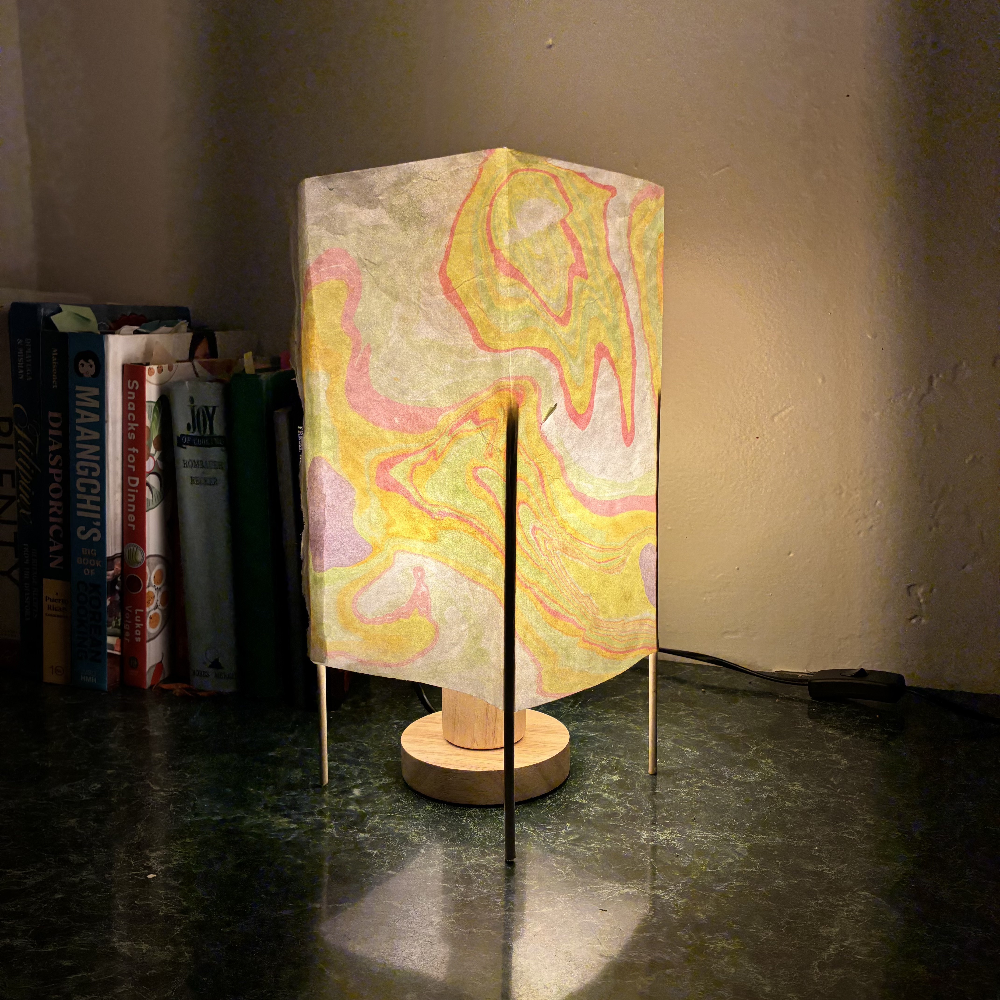
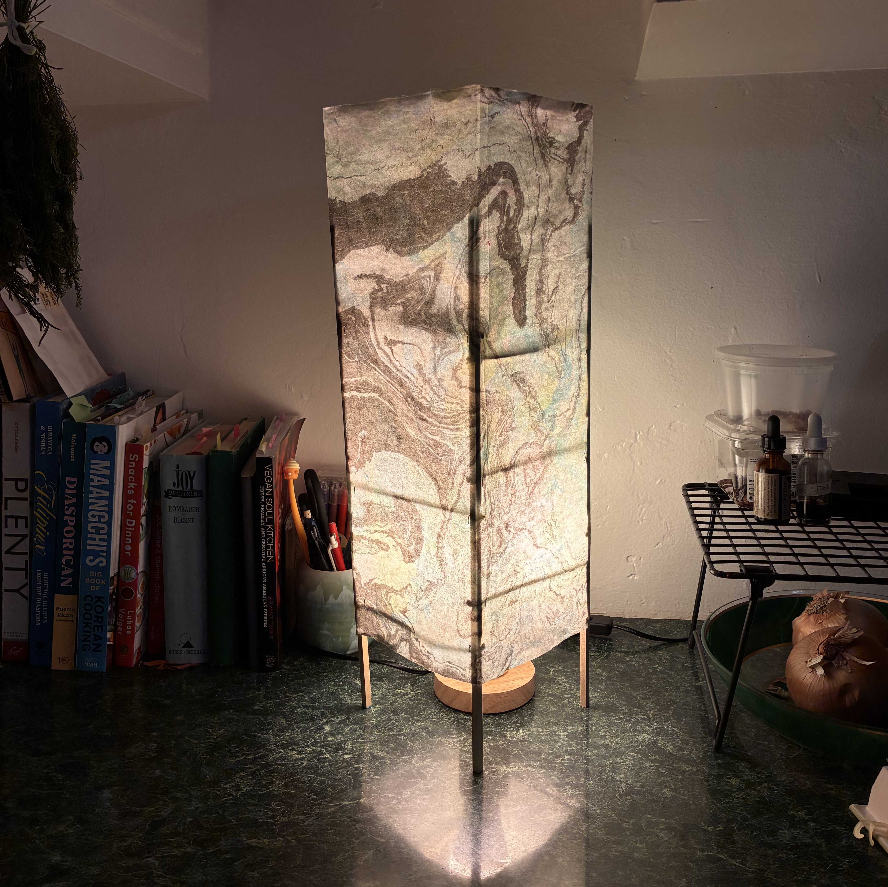
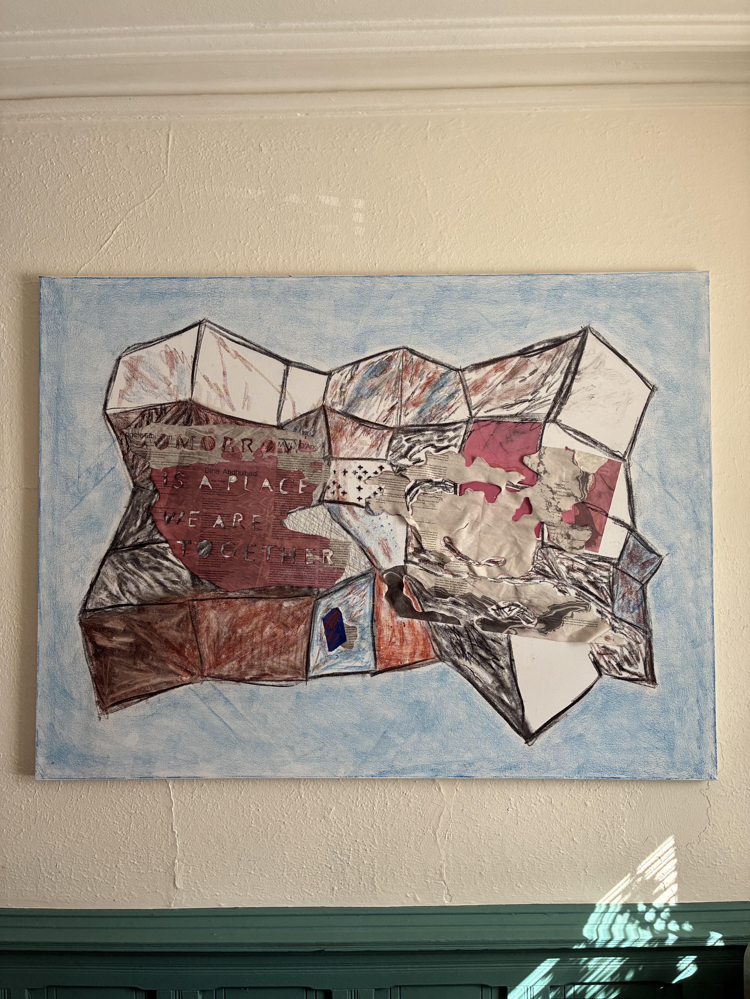

about
art
food
data
contact
hope caneel johnson
line cook / artist / educator
bio: hope caneel johnson is following the call of Rasha Abdulhadi to use their bio to uplift resistance efforts against the US-sponsored,
Israeli genocide of Palestinians. You can contribute to the movement by donating
supplies,
direct aid to families,
eSims,
endorsing PACBI,
engaging in BDS, and
organizing with local groups involved in Palestine solidarity work. I hope that more people and institutions are moved to full-throated support, with their words, their resources,
their (divestment from Israeli) money. You can contact PACBI@wawog.com
if you have questions or concerns, including legal ones, about your cultural or academic organization’s commitment. From the river to the sea, Palestine will be free.
employment history: Salvo's,
Obelisk,
the National Sustainable Agriculture Coalition,
Hart's,
COVID Behind Bars Data Project
e-newsletter sign-up:
Food
Bread Riot at Communiversity
Communiversity was a free, experimental, NYC-based community education offering in 2025.
I facilitated a day-long workshop for high school students called Bread Riot, exploring food sovereignty through an anti-criminalization lens.

Kitchen Tool Library
Kitchen Tool Library is a project I founded in 2023. It is a platform to facilitate loaning and borrowing kitchen
tools amongst people living in NYC. Design work by Clare Largomarsino.


Fermentation 101
Workshop for community gardeners I co-taught with the wonderful Justine Garcia! We talked about the science and art of fermenting seasonal vegetables.


Community Cake
Body Process is a Brooklyn-based collective of somatic and energy work practitioners dedicated to creating accessible spaces for healing, connection, and transformation through body-centered practices. In November
2024, Body Process hosted a meal for people to come together and get nourished. I baked a cake for the event, and it turned out nice. Enjoy these photos of my cake.


Grief ferment
I am grieving the ravages of empire and use fermentation to process my grief.
I am interested to learn about other fermentation-related or food-related grief practices. If you would like to discuss, please email me.
Art
Lamps
Suminagashi marbling
Okawara student paper, sumi ink, cloth, dowells, thread


Kinetic Sculpture
Zora is born!
Wood, plastic, wire

Bug mobile
Wire, plastic bugs, acrylic paint, yarn

Mixed media
Tomorrow is a place we are together (2026)
36" x 48" charcoal, newspaper, beet juice

Evidence // Underground (2024)
16" x 12" acryclic
Exhibited at Rhizome D.C. in December 2024 group exhibition.


Clothing
Double process dye Bleach, rit dye


Video
Ocean Side link
Shot on an iPhone 13 mini
I sometimes post photos of my art on Cara: link
I use Are.NA for research: link
Data
A Million Maps of Missouri
Data viz, MCMC sampling
For a project with the Princeton Gerrymandering Project and Clean Missouri,
I created an ensemble of possible redistricting plans using MCMC sampling and visualized the result.
Source code

Who's Still Talking About Guantánamo Bay?
Data viz, news media analysis
I investigated how the media has reported on the prison at Guantánamo Bay from 2010-2020.
Source code

about
contact